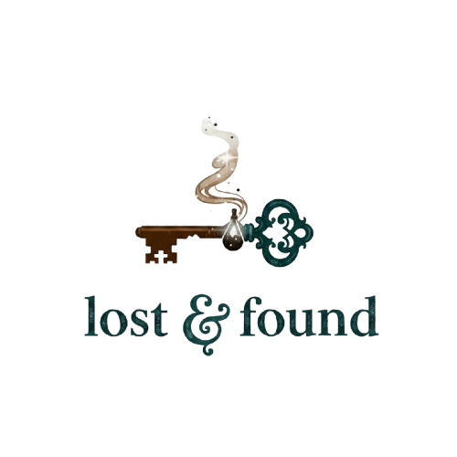

Sobre nosotras:
Somos Ailín y Jazmín, dos amigas que siempre tuvimos el mismo problema: perder cosas. Paraguas olvidados en el colectivo, medias desaparecidas en el lavarropas, llaves que nunca aparecen… cada día nos encontrábamos resolviendo pequeños “desastres” cotidianos.
De tanto pensar en soluciones, decidimos crear Lost & Found: un espacio donde todos esos productos útiles están siempre disponibles y listos para acompañarte en la vida diaria. En nuestro universo, estos objetos son parte natural de la rutina: paraguas resistentes, zapatillas que siempre están listas para caminar y calcetines que nunca se pierden.
Nuestro objetivo es simple: ofrecer productos que realmente faciliten el día a día, combinando funcionalidad, diseño y un toque de creatividad. No hay trucos ni milagros: lo que ves en Lost & Found es exactamente lo que obtenés, pensado para que te acompañe en tu vida cotidiana sin complicaciones.
Somos dos amigas que querían que lo práctico y lo confiable estuvieran al alcance de todos… y así nació este emprendimiento.
